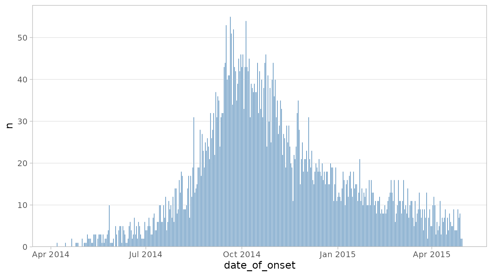
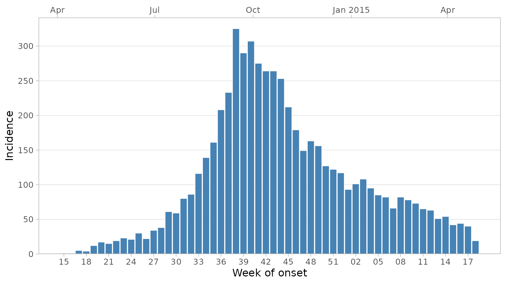
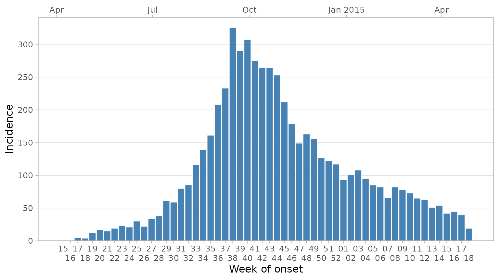
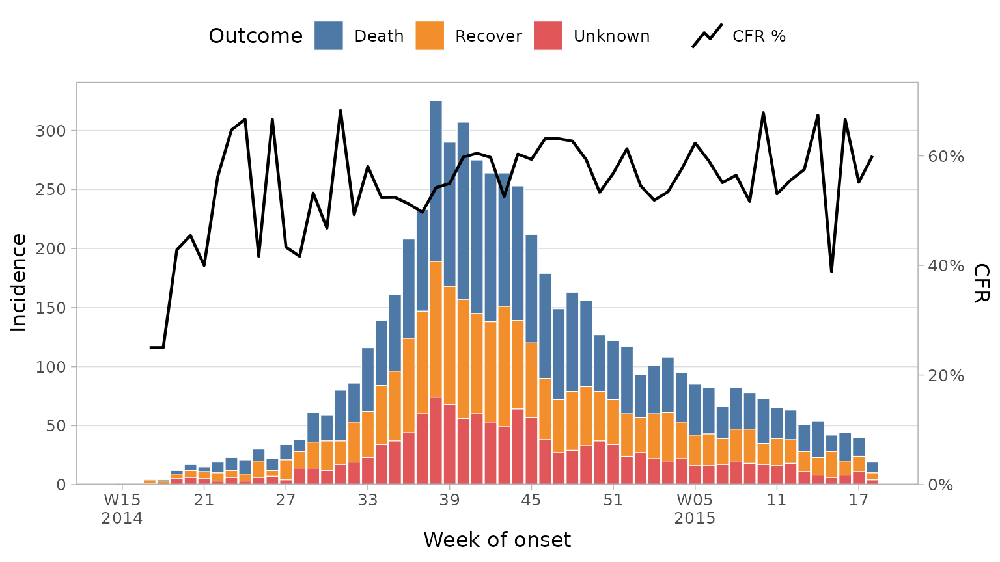

The plot_epicurve function can be used for plotting
incidence over time, commonly referred to as an epidemic curve or
epicurve. It is designed to work with un-aggregated data, i.e. patient
level linelist data.
We’ll use a simulated ebola outbreak dataset from the {outbreaks}
package for our examples.
library(dplyr)
library(ggplot2)
library(epivis)
library(outbreaks)
# set a ggplot2 theme of your preference
theme_set(theme_light(base_size = 12))
df_ebola <- as_tibble(outbreaks::ebola_sim_clean$linelist)
glimpse(df_ebola)
#> Rows: 5,829
#> Columns: 11
#> $ case_id <chr> "d1fafd", "53371b", "f5c3d8", "6c286a", "0f58c…
#> $ generation <int> 0, 1, 1, 2, 2, 0, 3, 3, 2, 3, 4, 3, 4, 2, 4, 4…
#> $ date_of_infection <date> NA, 2014-04-09, 2014-04-18, NA, 2014-04-22, 2…
#> $ date_of_onset <date> 2014-04-07, 2014-04-15, 2014-04-21, 2014-04-2…
#> $ date_of_hospitalisation <date> 2014-04-17, 2014-04-20, 2014-04-25, 2014-04-2…
#> $ date_of_outcome <date> 2014-04-19, NA, 2014-04-30, 2014-05-07, 2014-…
#> $ outcome <fct> NA, NA, Recover, Death, Recover, NA, Recover, …
#> $ gender <fct> f, m, f, f, f, f, f, f, m, m, f, f, f, f, f, m…
#> $ hospital <fct> Military Hospital, Connaught Hospital, other, …
#> $ lon <dbl> -13.21799, -13.21491, -13.22804, -13.23112, -1…
#> $ lat <dbl> 8.473514, 8.464927, 8.483356, 8.464776, 8.4521…You can plot a simple curve by providing the dataset and the bare column name containing the dates you want to plot:
plot_epicurve(
df_ebola,
date_col = date_of_onset
)
Working with dates and weeks
Commonly incidence is plotted by week, not day. Here we have daily
data but we can ask plot_epicurve to re-calculate incidence
by week instead by setting floor_date_week = TRUE. You can
choose the first day of the week with week_start (defaults
to 1 (Monday)). Finally we can set date axis labels to the week number
rather than date.
plot_epicurve(
df_ebola,
date_col = date_of_onset,
floor_date_week = TRUE,
week_start = 1,
label_weeks = TRUE,
date_lab = "Week of onset",
y_lab = "Incidence"
)
A secondary date axis can be added on top with default ggplot labels
via sec_date_axis = TRUE. When this is done, week labels
will be reduced to only the week number, as year information will be
displayed in the top labels. You can control the number of date labels
on the bottom axis with the date_breaks argument.
plot_epicurve(
df_ebola,
date_col = date_of_onset,
floor_date_week = TRUE,
label_weeks = TRUE,
date_breaks = "3 weeks",
sec_date_axis = TRUE,
date_lab = "Week of onset",
y_lab = "Incidence"
)
If you want to display more week labels and avoid overlapping, you
can use the dodge_x_labs helper function:
plot_epicurve(
df_ebola,
date_col = date_of_onset,
floor_date_week = TRUE,
label_weeks = TRUE,
sec_date_axis = TRUE,
date_breaks = "1 week",
date_lab = "Week of onset",
y_lab = "Incidence"
) +
dodge_x_labs()
Sometimes during epidemics a week or two may pass with no cases
reported. By default this would not appear on the epicurve as there is
no data for the latest week. However you may want to explicitly show
this on the graphic to effectively communicate that the data is
up-to-date and there are 0 cases in the latest week(s). To do this add a
date_max argument. This will force the date axis to extend
to that point:
plot_epicurve(
df_ebola,
date_col = date_of_onset,
floor_date_week = TRUE,
label_weeks = TRUE,
sec_date_axis = TRUE,
date_max = "2015-06-01", # extend axis to June 2015
date_breaks = "1 week",
date_lab = "Week of onset",
y_lab = "Incidence"
) +
dodge_x_labs()
Grouping Data
You may want to visualise a third variable by filling the columns
with varying colours. We can do this by adding a group_col
argument.
plot_epicurve(
df_ebola,
date_col = date_of_onset,
group_col = outcome,
floor_date_week = TRUE,
label_weeks = TRUE,
date_breaks = "2 weeks",
sec_date_axis = TRUE,
date_lab = "Week of onset",
y_lab = "Incidence",
group_lab = "Outcome"
)
By default, NAs will be plotted with a grey colour. You
can change this with the group_na_colour argument.
Alternatively, you may want to recode NAs in your data to a
more meaningful label. Because the outcome column in this
dataset is a factor, we can recode NAs with
forcats::fct_explicit_na.
df_ebola %>%
mutate(outcome = forcats::fct_explicit_na(outcome, "Unknown")) %>%
plot_epicurve(
date_col = date_of_onset,
group_col = outcome,
floor_date_week = TRUE,
label_weeks = TRUE,
sec_date_axis = FALSE,
date_lab = "Week of onset",
y_lab = "Incidence",
group_lab = "Outcome"
)
Note: here we ‘pipe’ the modified dataset into the first argument of
the plot_epicurve function.
Adding proportion lines
It can be useful to visualise a proportion or ratio over time on top
of the epicurve, case fatality ratio being a good example. This can be
done with plot_epicurve by providing a proportion column
along with the numerator and denominator values. To plot the CFR here we
would use the outcome column with a numerator of
"Death" and a denominator of
c("Death", "Recover") (ignoring unknown outcomes in the
calculation):
df_ebola %>%
mutate(outcome = forcats::fct_explicit_na(outcome, "Unknown")) %>%
plot_epicurve(
date_col = date_of_onset,
group_col = outcome,
prop_col = outcome,
prop_numer = "Death",
prop_denom = c("Death", "Recover"),
floor_date_week = TRUE,
label_weeks = TRUE,
sec_date_axis = FALSE,
date_lab = "Week of onset",
y_lab = "Incidence",
group_lab = "Outcome",
prop_lab = "CFR"
)
See also: prop_line_colour and
prop_line_size argument to modify the colour and line
thickness, respectively.
Faceting
Facets can be used to split the epicurves by a categorical variable,
often a location. In this case we can facet by hospital
simply by adding a facet_col = hospital argument. We also
set the facet columns to 2 and reduce the CFR line width due to smaller
plot sizes:
df_ebola %>%
mutate(outcome = forcats::fct_explicit_na(outcome, "Unknown")) %>%
plot_epicurve(
date_col = date_of_onset,
group_col = outcome,
facet_col = hospital,
facet_ncol = 2,
facet_labs = label_wrap_gen(width = 30),
prop_col = outcome,
prop_numer = "Death",
prop_denom = c("Death", "Recover"),
prop_line_size = .5,
floor_date_week = TRUE,
label_weeks = TRUE,
date_breaks = "4 weeks",
sec_date_axis = TRUE,
date_lab = "Week of onset",
y_lab = "Incidence",
group_lab = "Outcome",
prop_lab = "CFR"
)
Theming
Although plot_epicurve has built-in theme defaults,
because the function returns a ggplot object, you can easily reset any
default by adding your own themes, palettes etc to the object:
library(hrbrthemes) # install.packages("hrbrthemes") for additional ggplot2 themes
df_ebola %>%
mutate(outcome = forcats::fct_explicit_na(outcome, "Unknown")) %>%
plot_epicurve(
date_col = date_of_onset,
group_col = outcome,
prop_col = outcome,
prop_numer = "Death",
prop_denom = c("Death", "Recover"),
prop_line_colour = "orange",
prop_line_size = 0.5,
floor_date_week = TRUE,
label_weeks = TRUE,
sec_date_axis = FALSE,
date_lab = "Week of onset",
y_lab = "Incidence",
group_lab = "Outcome",
prop_lab = "CFR"
) +
scale_fill_manual(values = c("#486090FF", "#6078A8FF", "#7890A8FF")) +
hrbrthemes::theme_ft_rc() +
theme(
panel.grid.major.x = element_blank(),
panel.grid.minor.x = element_blank(),
axis.title.y = element_text(hjust = .5)
)